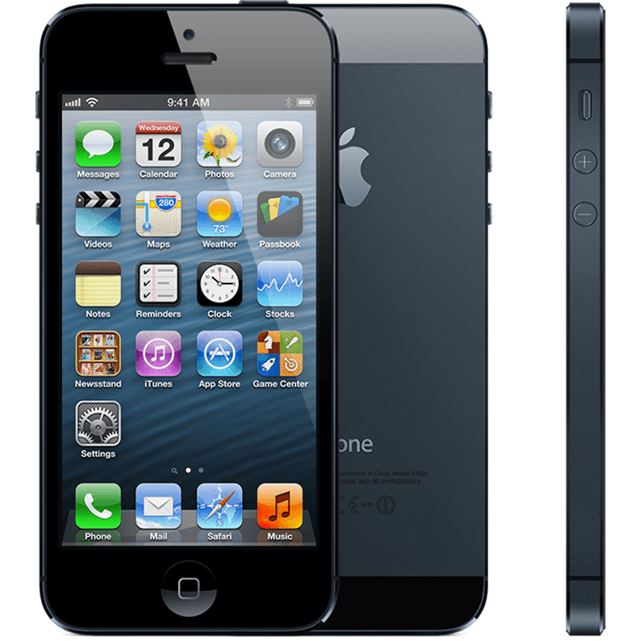
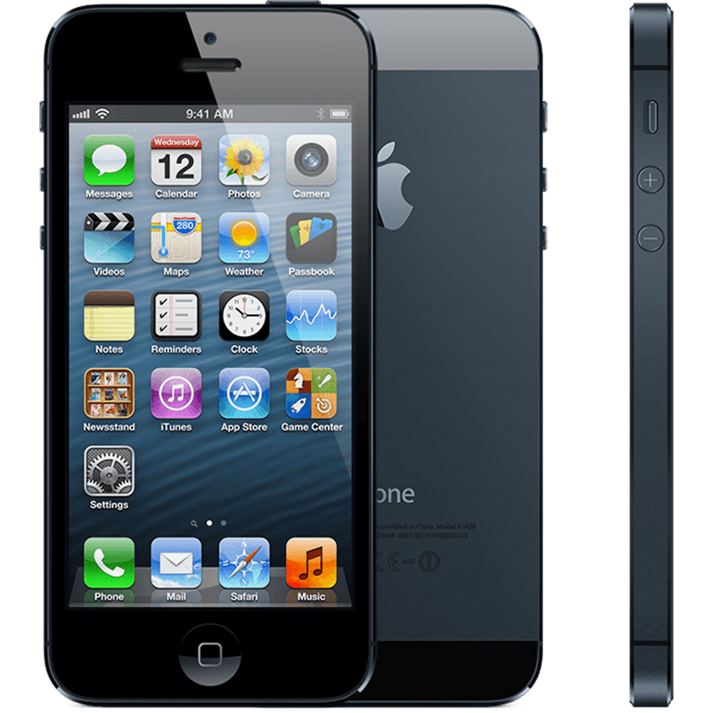

iPhone 3G
iPhone 3G
 iPhone 3Gs
iPhone 4
iPhone 3Gs
iPhone 4
 iPhone 4s
iPhone 4s
 iPhone 5

iPhone 5c
iPhone 5

iPhone 5c
 iPhone 5s
iPhone 5s

The iPhone (retroactively labeled the original iPhone) is a smartphone that was designed and marketed by Apple Inc. It is the first generation of iPhone and was announced on January 9, 2007[9] after years of rumors and speculation.[10] It was introduced in the United States on June 29, 2007. It featured quad-band GSM cellular connectivity with GPRS and EDGE support for data transfer. On June 9, 2008, Apple announced its successor, the iPhone 3G. The original iPhone no longer receives software updates from Apple; its final official firmware version was iPhone OS (now iOS) 3.1.3. Since June 11, 2013 the original iPhone has been considered "obsolete" in Apple retail stores, "vintage" by other service providers in the US, and "obsolete" in all other regions.[11] Apple does not service vintage or obsolete products, and replacement parts for obsolete products will not be available to service providers.[12]
Home